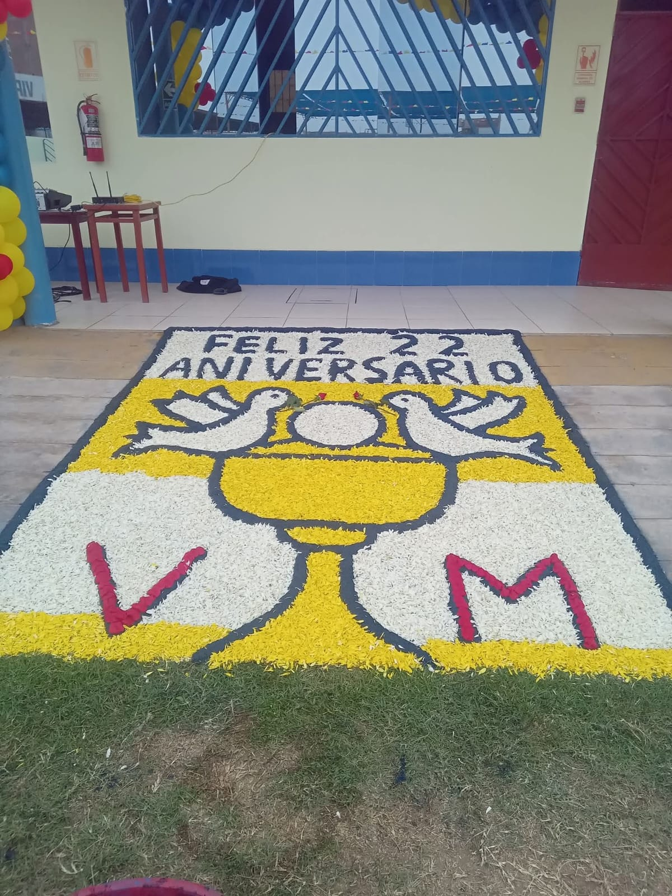

Arreglos y Alfombras para Eventos
Sofisticación, color y estilo para tus momentos más importantes. Diseñamos ambientes mágicos a la medida de tu celebración.
Decoraciones para Eventos
Decoración floral exclusiva para bodas, promociones, bautizos y aniversarios, cuidando cada detalle para crear un ambiente inolvidable.
Ver Fotos
Alfombras Florales
Arte efímero confeccionado con pétalos frescos y diseños personalizados para festividades religiosas, homenajes y ocasiones especiales.
Ver Fotos